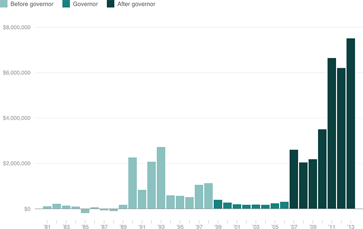

Jeb Bush's Income Has Exploded During His Post-Governor Years
During his governorship, Bush's income receded slightly. Since then, his income has skyrocketed, thanks to speaking fees, stock grants, and other sources. (All values are adjusted to 2015 dollars.)
